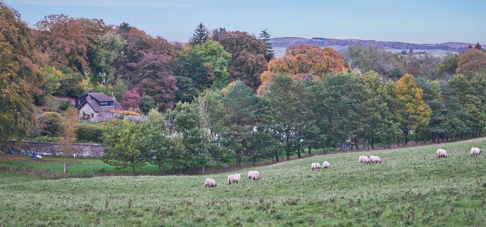
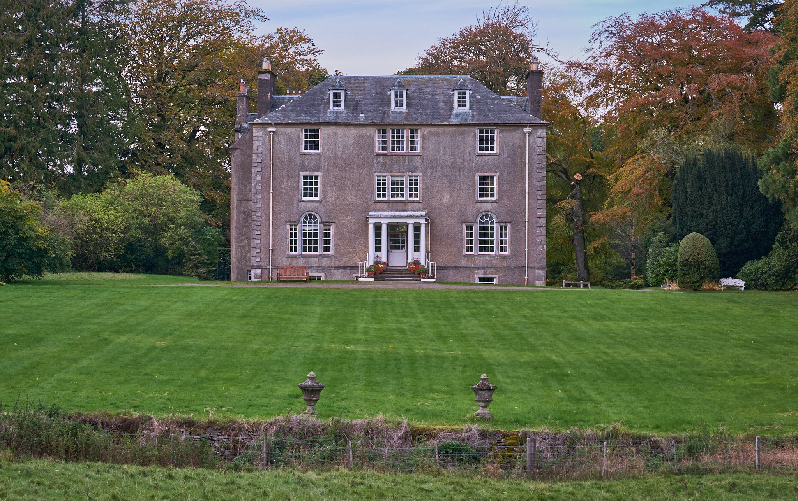
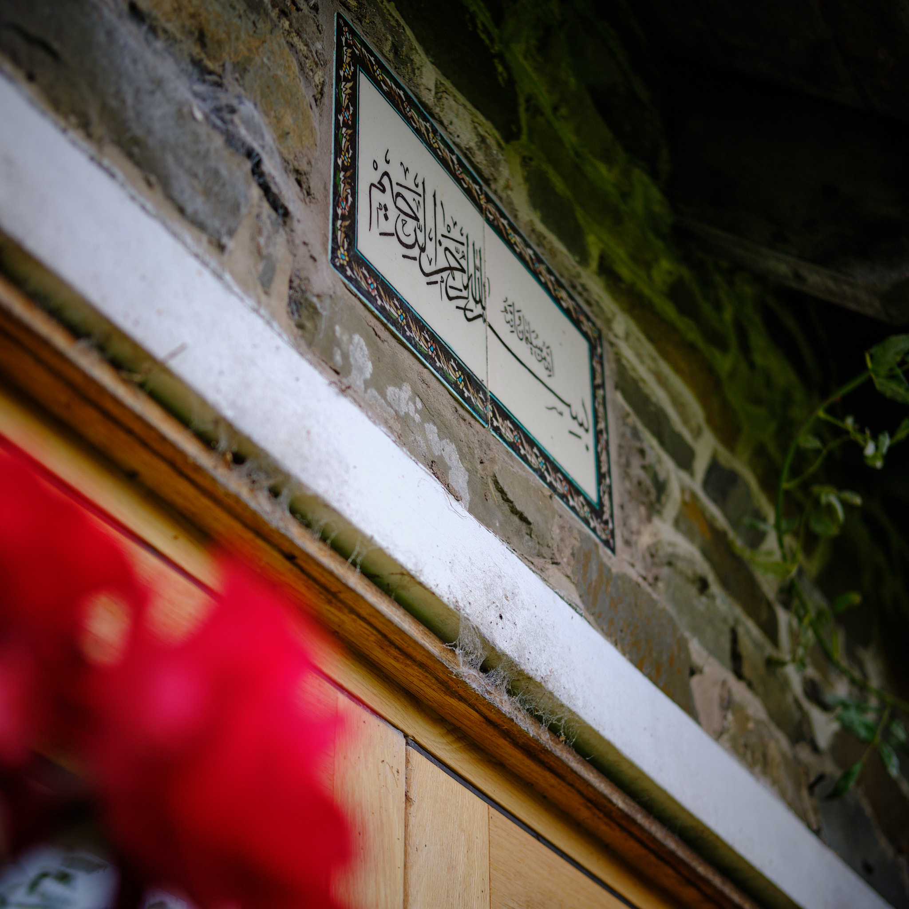
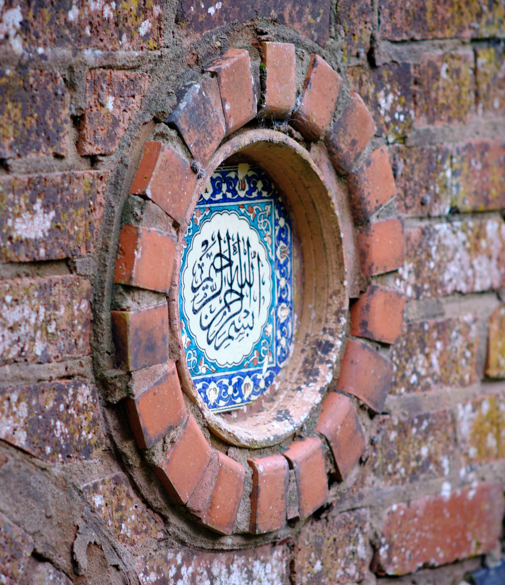
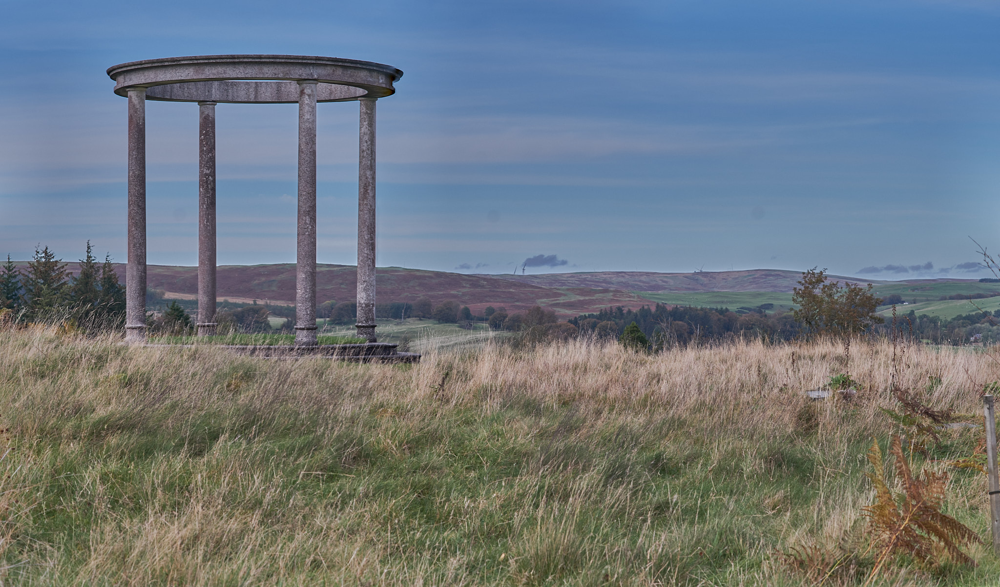
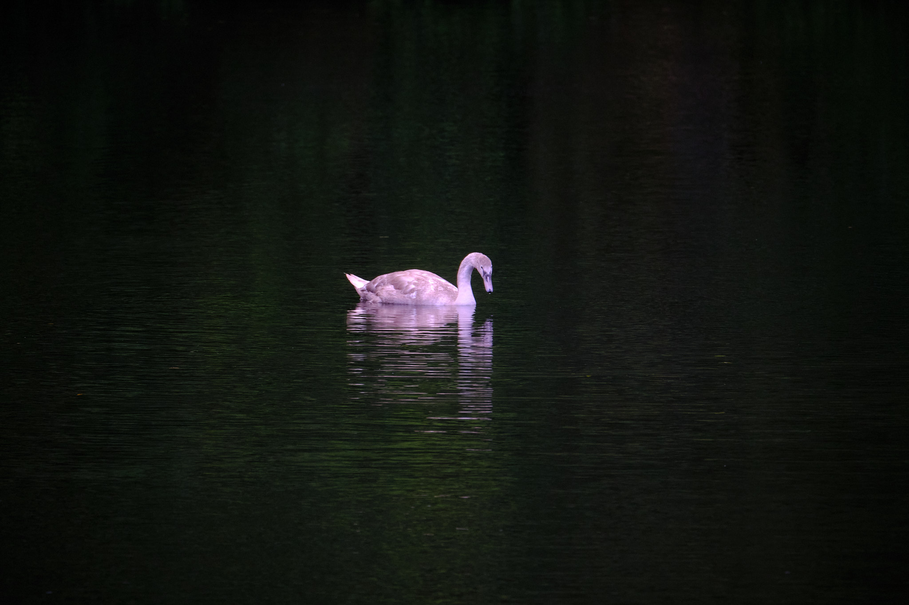

The Summer House
 The Summer House towards the lake
We took a weekend off for our anniversary, heading to a beautiful retreat in the Borders within the grounds of Chisholme House estate. We have not often chosen the Borders over our more usual favourite direction of North but wanted, as usual, a decent distance from hustle and bustle, nature and a wood-burning stove to curl up in front of at the end of the day. A place to read, reflect, walk and enjoy life together. Not far from Hawick, the Summer House offers all of that and more.
 The Summer House from the lake
The Summer House from the lake
This place has been fairly recently renovated and is cosy, warm and spacious enough for families and small groups to enjoy the stunning countryside here. There is a lake close by with swans and moorhens. A young deer met us on the driveway as we headed on to the estate. Owls serenaded the night. An otter played chicken with us in the road and then blew otter raspberries from the safety of a hedge.
Chisholme House
 Chisholme House
We did not go for (or know about) the retreats offered by the school at Chisholme but were intrigued and perhaps focused a little by the environment. From their website:
::: {.callout-note icon=false}} ## Dedicated to the art of self discovery
Chisholme offers an education for those who are convinced of our potential as human beings for goodness and positive effect on this earth, and who wish to be of service to it, to love and to learn. :::
A sense of Sufism
There seems to be no particular religion behind the philosophy at Chisholme but the school considers writings of great scholars of Islam, in particular those in the Sufi tradition such as Rumi and Ibn’Arabi. The Summer House includes artefacts of the three Abrahamic faiths of Islam, Christianity and Judaism.
 The Basmala appears at threshholds to the old and new summerhouse. The older summer house is in the walled garden, which is well tended by the gardner and a team of volunteers who give service as a form of study and reflection. Quotes from Bulent Rauf and others suggest that central to the teachings of the Institute is unity of life and self discovery. On the hill above the house is the Monument to Man:
 The Monument to Man above the estate has engraved around the circumference, “ALL ARE FROM HIM AND TO HIM THEY RETURN”, resonant with similar phrases in the Bible (e.g. Romans 11:36) and the Qu’ran (e.g. Surah Al-Baqarah 2:156). In the ground near to the monument, with its four pillars representing Chisholme’s own pillars of work, study, meditation and zikr, is a circular stone bearing the inscription:
O CONFIDENT SOUL, RETURN TO YOUR LORD, AGREEING AND AGREED TO ENTER AMONG MY SERVANTS AND ENTER MY PARADISE
This is a variation of another well known passage from the Qu’ran, Surah 89, Al-Fajr (Dawn, verses 26 – 30).
Time Travel to Tushielaw
We didn’t stay in the house for the whole weekend, and ventured out on a trip to Tushielaw for Sunday lunch. Despite high expectations for nice country pub food, instead it became more of a journey in time back to the 1970s. You had to have been there, of course, to fully appreciate the standard of service and fag reek over the sausage, egg ‘n’ chips with a choice of two sauces. And the footie on the telly. And the time it took for mine host to work out by hand, calculator, pen and paper in hand, the bill. And the landlady’s omnidirectional blather at anyone, or no-one, in the lounge. Such experience serves to remind us of how fortunate we are to be who we are.
Reflection
 Cygnet on the lake
It takes little reflection on life to see this ugly duckling as the gracious beauty he is becoming. Our weekend at the summer house gave us time and space to discuss things that concern us and things that make us. We took time and space to see ourselves more clearly and shared life and laughter. We resolved to act, and to not act, on these things. Chisholme draws on Lao Tsu for some of its teaching, describing it:
The philosophy of Lao Tsu is simple: Accept what is in front of you without wanting the situation to be other than it is. Study the natural order of things and work with it rather than against it, for to try to change what is only sets up resistance.
I think this understates Lao Tsu’s recognition of man’s free will and ability to use it. On the way home, we took advice from the Hadith:
Anas ibn Malik reported: A man said, “O Messenger of Allah, should I tie my camel and trust in Allah, or should I leave her untied and trust in Allah?” The Prophet, peace and blessings be upon him, said, “Tie her and trust in Allah.”
Source: Sunan al-Tirmidhī 2517
Notes on camera equipment
All of the pictures on this page were made with a Fuji X-T2 camera, and either the Fujifilm Fujinon XF16mmF1.4 R WR wide-angle lens, the 100-400 or my old Nikon 85mm Ai-S f/1.4. They were post-processed in Capture One Pro. There are other pictures yet come, taken on Lomo Babylon ISO 13 black & white film with Nikon FM SLR.